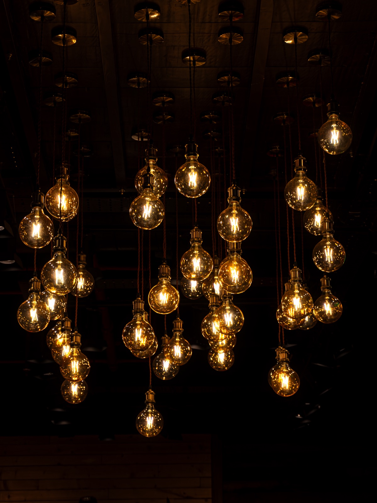

Photographer — Kerala, India
Jay
A moment simply arrives,
I try to be ready for it.
Selected Frames
Between light and shadow

About
On chasing light
I don’t chase perfect light — I wait for the moment it turns honest.
I’m a photographer based in Kerala, working across travel, architecture, wildlife and street — wherever a scene asks to be looked at twice. My camera has taken me from quiet forest undergrowth to crowded concert floors, from centuries-old palace domes to the ordinary hum of a railway overpass at dusk. What draws me in changes by the day; the instinct to stop and notice doesn’t.
I shoot instinctively rather than to a plan — walking until something insists on being photographed, then waiting for the light, the gesture, or the silhouette to fall into place. Fire, dusk, shadow and stillness turn up again and again in the work; I’m drawn to the moment before things resolve, when a frame could still go either way. Every photograph here started with five minutes of standing still and paying attention.
- Based in
- Kerala, India
- Focus
- Travel · Architecture · Wildlife · Street
- Drawn to
- Silhouettes, dusk light, quiet corners
Contact
Start a conversation
Whether it’s a shared frame, a project, or just a word about the work — I’d love to hear from you. I read every message myself.
jayasankar.mr7@gmail.comOver to you.
Your draft is waiting in your mail app — add anything else you’d like, then send it my way. If nothing opened, write to jayasankar.mr7@gmail.com and I’ll see it just the same.
— J.